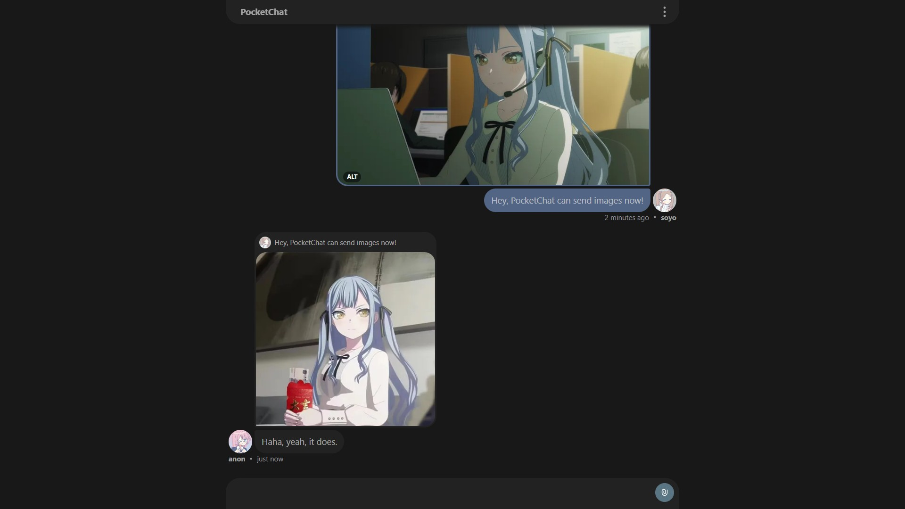
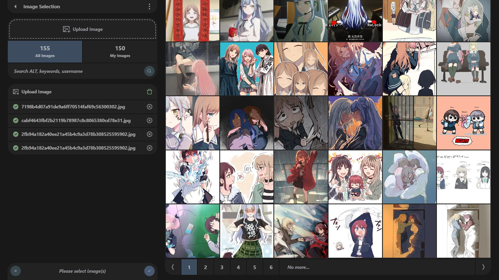

好奇猫a
@acnekot
@harukiO_0 看起来好像还不错


haruki🐻
@harukiO_0
PocketChat v0.2.1 发布啦，已支持图片发送、查看、信息编辑🎉
PocketChat 是一个基于 PocketBase 与 Vue3 的开源实时聊天平台。
支持 linux、windows、macos 。可在 windows 上解压后运行。支持 docker 部署。
支持配置 Github、X/Twitter 等 OAuth2 登录/注册方式。
（写不下了，项目地址在回复里） https://t.co/h7SJa7jbcN